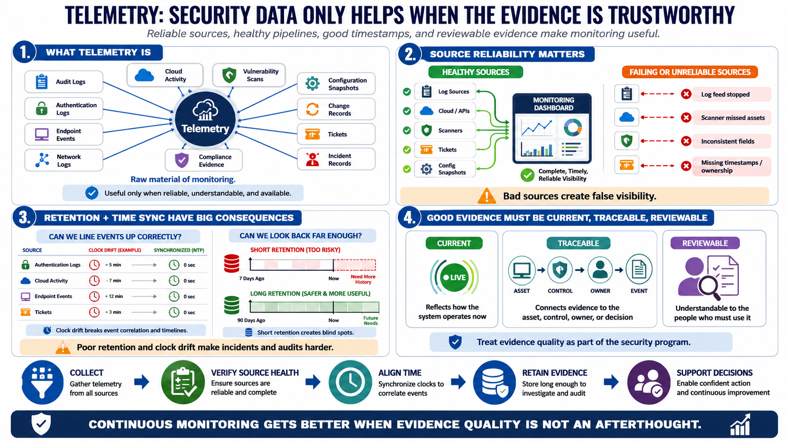

Telemetry, Logs, and Evidence Sources
Connecting to LMS... Progress: in progress

Narration
Telemetry is security-relevant data generated by systems, applications, identities, networks, endpoints, and cloud services. It can include audit logs, authentication logs, endpoint events, network logs, cloud activity records, vulnerability scan results, configuration snapshots, change records, tickets, incident records, and compliance evidence. Telemetry is the raw material of monitoring, but raw data only becomes useful when it is reliable, understandable, and available when needed.
Source reliability matters. A log source that silently stops sending data can create a false sense of visibility. A scanner that misses important assets can distort vulnerability priorities. A ticket queue with inconsistent fields can weaken reporting. A configuration snapshot without timestamps or ownership may be hard to use as evidence. Monitoring programs should track the health and quality of their evidence sources, not only the events inside them.
Retention and time synchronization are practical details with large consequences. Retention affects how far back investigators, auditors, and operators can reconstruct activity. Time synchronization affects whether events from different systems can be correlated. If authentication logs, cloud activity logs, endpoint events, and tickets all use inconsistent clocks or short retention windows, the organization may struggle to understand what happened during an incident or audit review.
Evidence should be current, traceable, and reviewable. Current means it reflects the system as it actually operates now. Traceable means a reviewer can connect evidence back to the asset, control, owner, event, or decision it supports. Reviewable means it is understandable to the people who need to use it. Continuous monitoring improves when evidence quality is treated as part of the security program, not as an afterthought.